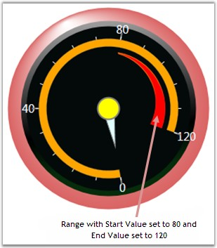

Ranges are objects that highlight a range of values. Ranges can be customized using various attributes such as Range Positioning, distance of the ranges from the scale, Start and End width of the range and so on. All the available attributes are listed in the below table.
|
Property |
Description |
|
StartValue |
Specify the start value of the range. Default value is set to 0. |
|
Endvalue |
Specify the end value of the range. Default value is set to 0. |
|
StartWidth |
Specify the start width of the range. Default value is set to 0. |
|
EndWidth |
Specify the end width of the range. Default value is set to 0. |
|
DistanceFromScale |
Specify from which distance the range should be displayed from the scale. Default value is set to 0. |
|
RangePosition |
Using this attribute, range can be positioned in three areas along the circular scale. It includes the following options.
Cross Inside Outside
Default value is Inside. |
The following code example illustrates how to add ranges to the Circular Gauge.
|
[XAML]
<syncfusion:CircularGauge Radius="170" FrameType="FullCircle">
<!--Adding Circular Scale--> <syncfusion:CircularGauge.Scales> <syncfusion:CircularScale Name="CircularScale" Minimum="0" Maximum="240" ScaleBarSize = "10" ShadowOffset="1" Radius = "116" BorderWidth = "0.2" BorderBrush="Gray" BackgroundBrush="LightGray" MinorIntervalValue="10" MajorIntervalValue="20" StartAngle="100" GapSweepAngle="310">
<!--Adding Ranges--> <syncfusion:CircularScale.Ranges> <syncfusion:CircularRange StartValue="80" EndValue="120" StartWidth="1" EndWidth="15" BorderWidth="1" BackgroundBrush="Red" RangePosition="Inside" DistanceFromScale="7"/> </syncfusion:CircularScale.Ranges> </syncfusion:CircularScale> </syncfusion:CircularGauge.Scales> </syncfusion:CircularGauge> |
|
[C#]
private CircularScale m_scale; m_scale = new CircularScale(); m_scale.ShadowOffset = 1; m_scale.Minimum = 0; m_scale.Maximum = 100; m_scale.MinorIntervalValue = 2; m_scale.MajorIntervalValue = 10; m_scale.StartAngle = 120; m_scale.GapSweepAngle = 300; m_scale.ScaleBarSize = 5; m_scale.Radius = 95; m_scale.BorderWidth = 1.2; m_scale.BorderBrush = Brushes.PeachPuff; m_scale.BackgroundBrush = Brushes.Plum;
this.circularGauge1.Scales.Add(m_scale);
CircularRange range1= new CircularRange(); range1.BackgroundBrush = Brushes.Red; range1.StartValue = 80; range1.EndValue = 120; range1.StartWidth = 5; range1.EndWidth = 15; range1.RangePosition = ScalePlacement.Inside; range1.DistanceFromScale = 7; m_scale.Ranges.Add(range1); |
The below image shows how the circular gauge with ranges.

Figure 35: Circular Range
 Note: We should have the scales added to the
gauge. Only then we can add the ranges to the Circular Gauge. And we can add any
number of ranges.
Note: We should have the scales added to the
gauge. Only then we can add the ranges to the Circular Gauge. And we can add any
number of ranges.
See Also
Circular Gauge, Circular Label Tick, Circular Mark Tick, Circular Pointer